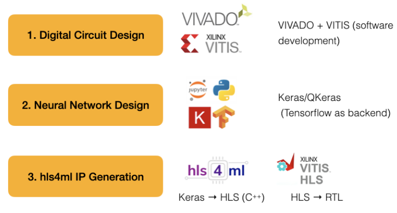

PHYS476: Modern Electronics for Scientists
Spring Semester
This course introduces students to digital circuit design, FPGA programming,
and the implementation of AI/ML in particle physics experiments.
The course is designed for beginners with an interest in modern electronics and its
applications in physics.
🔗 Presentations: ML4FE Workshop, US-Japan Symposium, CPAD2025
